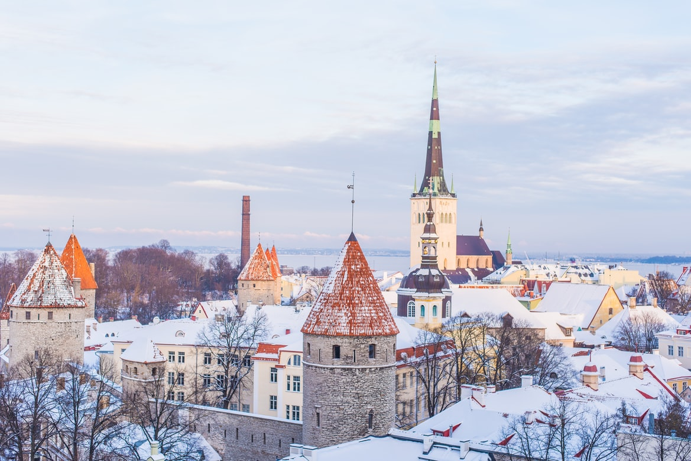

Tallinn
Book HereThe capital of Estonia is a perfect holiday destination for all seasons. It combines all great things about the modern world and the history of this tiny northern nation.
The historical centre is a marvellous example of medieval architecture that is truly an open museum on its own.
Tallinn is the first point of entry for most people travelling to Estonia. Lennart Meri Tallinn Airport has incoming flights from many European cities and is easy to reach.
Additionally, the city is also close to the Baltic sea across which lies the capital of Finland, Helsinki. Thus, it's a great starting point when travelling through Eastern/Northern Europe.
More Info